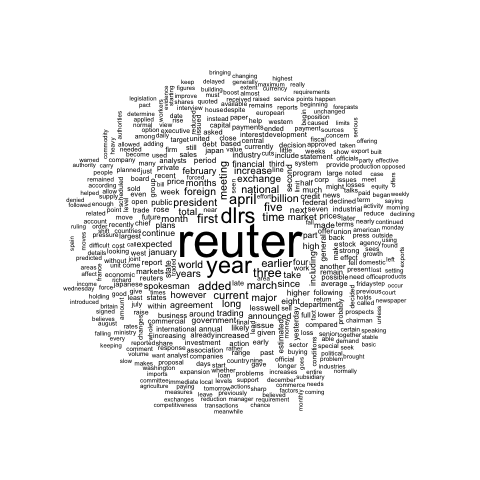

These graphics come from the blog of Benjamin Tovarcis. He answered a machine learning challenge at Hackerrank which consisted on document classification.
The dataset consists of 5485 documents distributed among 8 different
classes, perfect to learn text mining (with the tm
package) and compute wordclouds (using
the wordcloud package).
If you need a more basic approach of wordcloud, have a look to the graph #15. Have a look to the blog of Benjamin for more explanations and thanks to him for his contribution !
# Packages
library(reshape)
library(tm)
library(wordcloud)
# --------------------------------------------------------------------------------------------------------------------------------------------------------------------------------
# -- STEP 1 : GET THE DATA
# A dataset with 5485 lines, each line has several words.
dataset=read.delim("https://raw.githubusercontent.com/TATABOX42/text-mining-in-r/master/dataset.txt", header=FALSE)
# The labels of each line of the dataset file
dataset_labels <- read.delim("https://raw.githubusercontent.com/TATABOX42/text-mining-in-r/master/labels.txt",header=FALSE)
dataset_labels <- dataset_labels[,1]
dataset_labels_p <- paste("class",dataset_labels,sep="_")
unique_labels <- unique(dataset_labels_p)
# merge documents that match certain class into a list object
dataset_s <- sapply(unique_labels,function(label) list( dataset[dataset_labels_p %in% label,1] ) )
# --------------------------------------------------------------------------------------------------------------------------------------------------------------------------------
# -- STEP2 : COMPUTE DOCUMENT CORPUS TO MAKE TEXT MINING
# convert each list content into a corpus object
dataset_corpus <- lapply(dataset_s, function(x) VCorpus(VectorSource( toString(x) )))
# merge all documents into one single corpus
dataset_corpus_all <- dataset_corpus[[1]]
for (i in 2:length(unique_labels)) { dataset_corpus_all <- c(dataset_corpus_all,dataset_corpus[[i]]) }
# remove punctuation, numbers and stopwords
dataset_corpus_all <- tm_map(dataset_corpus_all, removePunctuation)
dataset_corpus_all <- tm_map(dataset_corpus_all, removeNumbers)
dataset_corpus_all <- tm_map(dataset_corpus_all, function(x) removeWords(x,stopwords("english")))
#remove some unintersting words
words_to_remove <- c("said","from","what","told","over","more","other","have","last","with","this","that","such","when","been","says","will","also","where","why","would","today")
dataset_corpus_all <- tm_map(dataset_corpus_all, removeWords, words_to_remove)
# compute term matrix & convert to matrix class --> you get a table summarizing the occurence of each word in each class.
document_tm <- TermDocumentMatrix(dataset_corpus_all)
document_tm_mat <- as.matrix(document_tm)
colnames(document_tm_mat) <- unique_labels
document_tm_clean <- removeSparseTerms(document_tm, 0.8)
document_tm_clean_mat <- as.matrix(document_tm_clean)
colnames(document_tm_clean_mat) <- unique_labels
# remove words in term matrix with length < 4
index <- as.logical(sapply(rownames(document_tm_clean_mat), function(x) (nchar(x)>3) ))
document_tm_clean_mat_s <- document_tm_clean_mat[index,]
# Have a look to the matrix you are going to use for wordcloud !
head(document_tm_clean_mat_s)
# --------------------------------------------------------------------------------------------------------------------------------------------------------------------------------
# -- STEP 3 : make the graphics !
# Graph 1 : first top 500 discriminant words
png("#102_1_comparison_cloud_top_500_words.png", width = 480, height = 480)
comparison.cloud(document_tm_clean_mat_s, max.words=500, random.order=FALSE,c(4,0.4), title.size=1.4)
dev.off()
# Graph 2 : first top 2000 discriminant words
png("#102_1_comparison_cloud_top_2000_words.png", width = 480, height = 480)
comparison.cloud(document_tm_clean_mat_s,max.words=2000,random.order=FALSE,c(4,0.4), title.size=1.4)
dev.off()
# Graph 3: commonality word cloud : first top 2000 common words across classes
png("#103_commonality_wordcloud.png", width = 480, height = 480)
commonality.cloud(document_tm_clean_mat_s, max.words=2000, random.order=FALSE)
dev.off()